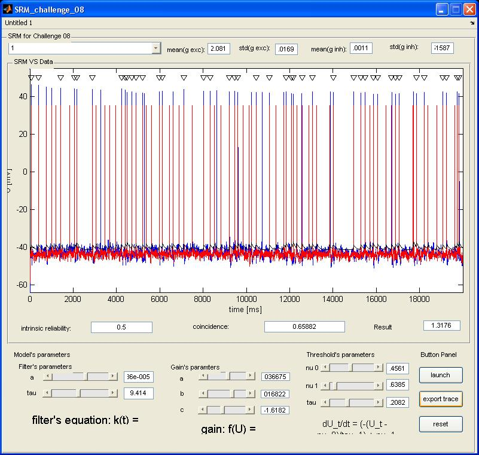

Interactive simulator of Spike Response Models (SRM), adapted from Jolivet R, Lewis TJ, Gerstner W (2004) Generalized integrate-and-fire models of neuronal activity approximate spike trains of a detailed model to a high degree of accuracy. Neurophysiol 92:959-76 also see, Jolivet R, Kobayashi R, Rauch A, Naud R, Shinomoto S, Gerstner W (2008) A benchmark test for a quantitative assessment of simple neuron models. J Neurosci Meth 169(2):417-424 Renaud Jolivet, Felix Schurmann, Thomas K. Berger, Richard Naud, Wulfram Gerstner, Arnd Roth (2008) The quantitative single-neuron modeling competition. Biological Cybernetics 99(4-5):417-426 Files: These are the SRM simulators for 2007, 2008 SRM_challenge_07.m SRM_challenge_08.m Files: These are the SRM simulators for 2007, 2008 SRM_challenge_07.m SRM_challenge_08.m Usage: type the following at the shell command prompt or just the name of the file (without the .m) at the matlab command prompt: matlab SRM_challenge_07 or matlab SRM_challenge_08 Then: 1. Load data with the pop-up menu (in the upper left corner) 2. Set the parameters 3. Click on the "launch" button 4. To export graph, click on the "Export Graph" button 5. To restart simulator, click on the "Reset" button A data set 1 _08 run is similar to figure 5 in the 2008 paper:  To zoom in on the figure press export the traces and use the magnifying zoom in the new matlab figure window. Note: Always modify parameters before pressing the launch button (START SIM in the '07 simulator), and not during a simulation, otherwise the old parameters will be used.